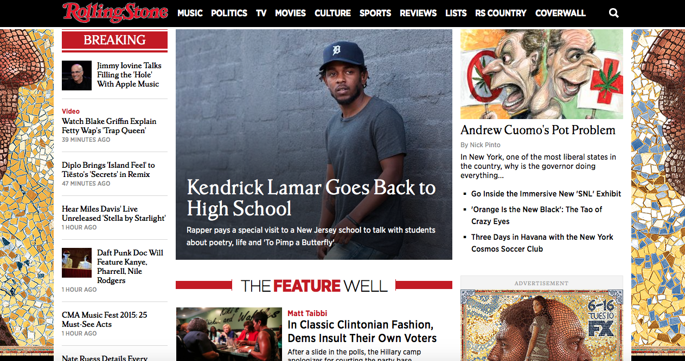
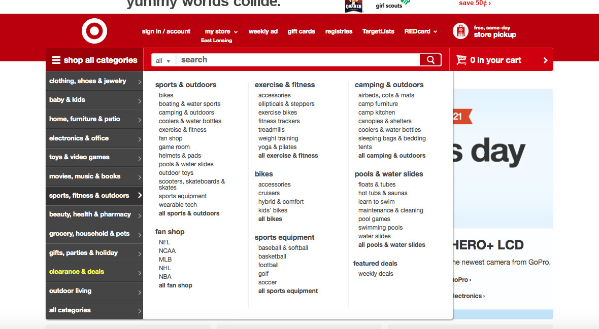

treehouse.com section that preivews each coding class is an example of an affordance. Each button is clearly labeled and will lead the user to a lesson in that coding class.
rollingstone.com home page is a great example of the rule of thrids, the main article picture is postion perfectly between the center sqaure, with eqaul amounts of content on either side.
target.com has department and sales section in a tool bar on the side of the site. When the tool bar is hovered over it revales more clickable content within that deparment or sales promotion.
reddit.com contenet is presented in links the sites ads are a promoted link at the top and a box clearly marked ad on the side. Each link is marked with a sub catergorey but the title of the link is the most visable thing.
imgur.com follows Ockham's Law it is a image hosting website with a simple toolbar at the top of the site and just pcitures underneith. The user vote on which images will be seen on the "front page" but if a user just goes to imgur they will see pictures that are hosted on the site